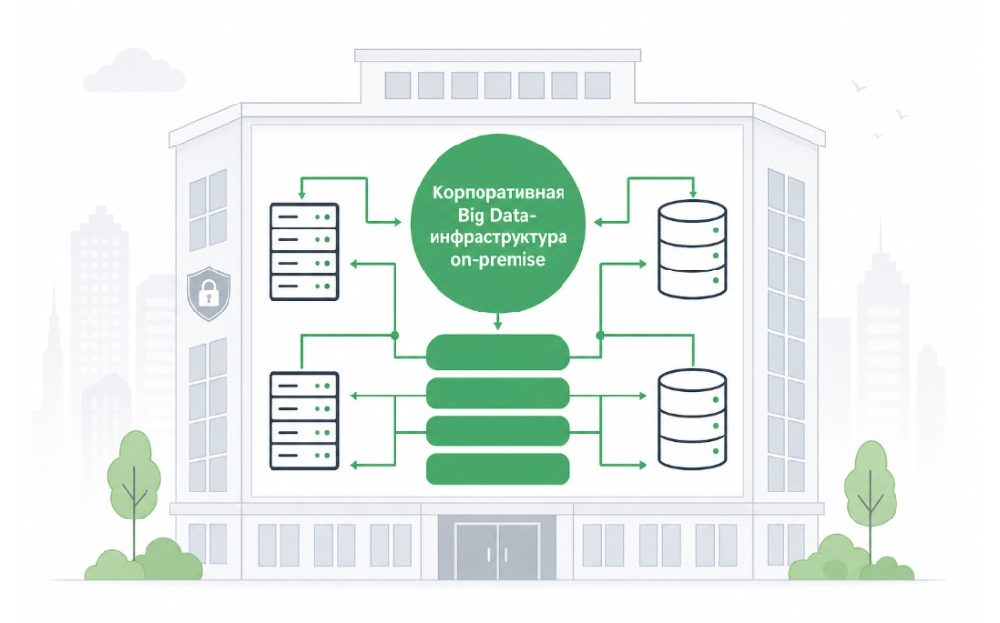

Почему нет vendor lock-in?
Все компоненты — 100% open source. Никаких проприетарных зависимостей, скрытых лицензионных сборов и ограничений на использование.
Корпоративная платформа данных на Astra Linux: Hadoop, Spark, Kafka, Delta Lake. 1 ПБ+ в prod, zero downtime, без vendor lock-in. Полностью on-premise, собственная сборка Hadoop.
Преимущества
100% open source, Astra Linux, SRE zero downtime и прозрачное лицензирование — платформа на 1 ПБ+ без «чёрных ящиков».
Мы взяли мощь чистого Apache Hadoop, усилили его SRE-практиками и добавили прозрачную коммерческую поддержку (L3/L4). Платформа доказала свою надёжность на петабайтных нагрузках. Никаких «чёрных ящиков» и платы за тестовые среды.
Все компоненты — 100% open source. Никаких проприетарных зависимостей, скрытых лицензионных сборов и ограничений на использование.
Работает на Астра Линукс Воронеж 1.8. Интеграция с ALD PRO. Планируется регистрация в Реестре российского ПО (Q1 2027).
Обработка 15 000+ msg/s в стриминге. Spark с мультиверсионностью. Delta Lake для ACID-транзакций на HDFS.
Автоматизированный rolling restart для всех компонентов. HA для HDFS, YARN, Hive Metastore, PostgreSQL Patroni.
Kerberos + RBAC + Knox (Q2 2027). OIDC через Keycloak для веб-интерфейсов. ALD PRO домен уже интегрирован.
Ansible-роли для полного жизненного цикла. Развёртывание на VM без K8s.
Deep health checks: JMX, VIP, ZK Quorum, порты.
Spark 3.2.3 + 3.5.8, Python 3.10 + 3.13, Java 1.8 + 11 — параллельно. Изолированные среды без конфликтов.
CI/CD для компонентов, собственная система управления кластером, регистрация в Реестре РФ.
1 ПБ+, 40 Data Nodes, 15 000 msg/s Kafka, 500+ DAG — промышленная эксплуатация 24/7.
Это не лабораторный стенд. Наша платформа — промышленная машина, которая ежедневно обслуживает более 500 критических пайплайнов (DAGs) в режиме 24/7.

Архитектура
Развёртывание и управление всеми компонентами
Аутентификация, авторизация, OIDC/SSO
В разработке — Q1 2027
Управление секретами и артефактами
CI/CD пайплайны
Автоматизация рутинных операций, измеримая надёжность сервисов, проактивный мониторинг и снижение риска человеческого фактора. Мы зашили эту логику прямо в платформу — обновления и инциденты обрабатываются по заранее описанным сценариям, а не «вручную по ночам». Поэтому выход узла из строя или обновление компонентов больше не означают остановку сервиса.
Автоматический мягкий вывод узлов из работы (Drain), ожидание завершения задач, рестарт и Health-check перед возвратом в кластер.
Автоматика не позволит администратору случайно перезагрузить критическое количество узлов одновременно.
Детектирование изменений в конфигурации и автоматическое применение соответствующих процедур рестарта для каждого компонента (YARN, HDFS, Zookeeper, Patroni).
Вы платите только за Production — Dev/Test/UAT и management nodes бесплатно.
Мы сделали коммерческую модель прозрачной. Никаких скрытых платежей и переплат за служебную инфраструктуру.
Мы не берём деньги за среды разработки и тестирования. Экспериментируйте, проверяйте гипотезы и обучайте модели без оглядки на стоимость лицензий.
До 6 серверов управления (NameNode, ResourceManager, ZooKeeper, DB) на один кластер не тарифицируются. Вы платите только за полезную нагрузку — Data-узлы.
Две модели на выбор: по размеру узлов (Node-based) или по пулу ресурсов (vCPU + Storage). Выбирайте ту, которая выгоднее для вашей архитектуры.
В базовую стоимость лицензии уже включена 4-я линия поддержки (выпуск патчей, исправление багов, доступ к roadmap). Опционально — SLA по L3 (решение инцидентов 8×5).
Мы открыто делимся планами развития платформы:
Завершение контура Enterprise-безопасности (внедрение Kerberos, Apache Knox, RBAC). Переход на универсальные CI/CD пайплайны.
Релиз собственного графического UI для управления кластером (ответ западным аналогам) и бесшовная интеграция с OpenMetadata, Data Quality и Greenplum.
Регистрация продукта в Реестре российского ПО.
«Мы создали Big Data Enterprise Platform, потому что сами устали от vendor lock-in и закрытых сборок. Наше решение — это полностью открытый, управляемый стек на Astra Linux. Вы получаете бинарники, Ansible-роли для автоматического развертывания и управления кластером, тесты совместимости компонентов и документацию. Всё, чтобы запустить промышленный Data Lake без сюрпризов.»
On-premise, полный контроль, нет egress-платежей, открытый код Apache.
Нет — vanilla Apache + Ansible. Open Source →
Да — rolling restart и горизонтальное добавление Data Nodes.
JupyterHub + Delta Lake + Kafka для feature pipelines. AI-ready →
Формула и переменные — в статье о расчёте TCO. Тарифы — выше на этой странице. КП — в FAQ или контакты.
Q1 2027 — заявка в Реестр российского ПО.
Подробнее — в блоге: отказоустойчивость, MLOps и open source для enterprise.